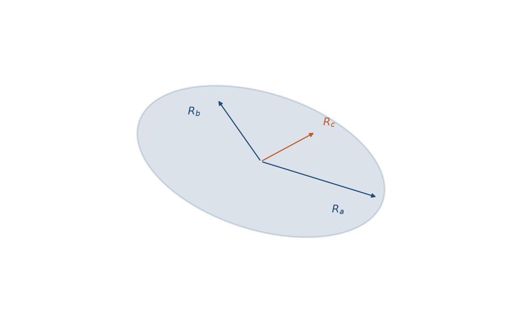
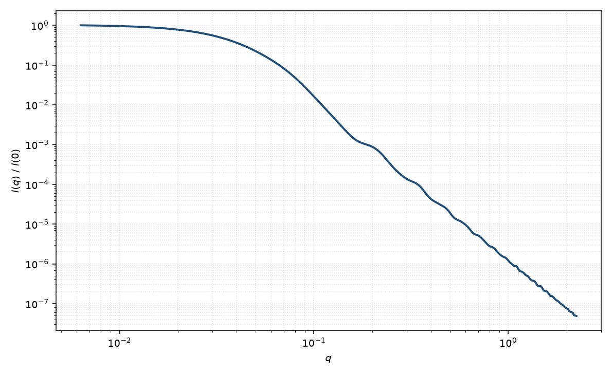

三轴椭球
triaxial ellipsoid
适用场景
三个半轴 $R_a,R_b,R_c$ 均不等的均匀椭球。适用于既不是旋转对称、也尚未尖角化成砖块的粒子：压扁又拉长的胶束、不规则纳米晶的光滑近似，以及电镜给出三个特征尺寸的胶体。
若其中两轴相等，应改用旋转椭球（少一个自由参数）。若棱角分明，应改用平行六面体。轴比都接近 1 时与球无法分辨。
一维粉末平均把三个半轴的信息叠进同一条 $I(q)$，可辨识性弱于旋转椭球；没有电镜或二维数据时不要同时放开三个半轴与多分散。
物理图像
每一取向的振幅仍是有效半径 $R_{\mathrm{eff}}(\theta,\phi)$ 上的 Rayleigh 球振幅。Mittelbach 与 Porod 给出对球面角的二重平均。回转半径 $R_g^2=(R_a^2+R_b^2+R_c^2)/5$。
一轴显著长于另两轴时，中间区接近椭圆截面圆柱；三轴都中等时，振荡被双重取向平均抹得很浅。二维图案需要三个欧拉角，而不是单个极角。
示意图


核心公式
出发点
稀释、取向无规的均匀粒子，相干散射振幅是衬度对平面波相位的体积分
$$F(\mathbf{q})=\int_V \Delta\rho(\mathbf{r})\,\mathrm{e}^{i\mathbf{q}\cdot\mathbf{r}}\,\mathrm{d}^3r.$$三轴椭球是单位球 $|\mathbf{u}|\le 1$ 经 $A=\mathrm{diag}(R_a,R_b,R_c)$ 的仿射像。体积 $V=|\det A|\cdot 4\pi/3=\frac{4}{3}\pi R_a R_b R_c$。
推导
与旋转椭球同一换元：$F(\mathbf{q})=\Delta\rho\,|\det A|\,F_{\mathrm{ball}}(A^{\mathrm{T}}\mathbf{q})$，$F_{\mathrm{ball}}(\mathbf{k})=\frac{4\pi}{3}\Phi(|\mathbf{k}|)$，$\Phi(x)=3(\sin x-x\cos x)/x^3$。在球坐标中 $\mathbf{q}$ 相对主轴的方向为 $(\theta,\phi)$，于是
$$|A^{\mathrm{T}}\mathbf{q}|=q R_{\mathrm{eff}}(\theta,\phi),$$ $$R_{\mathrm{eff}}(\theta,\phi)=\sqrt{R_a^2\sin^2\theta\cos^2\phi+R_b^2\sin^2\theta\sin^2\phi+R_c^2\cos^2\theta}.$$固定取向 $F=\Delta\rho V\Phi(q R_{\mathrm{eff}})$。正交八面体对称把球面平均收到第一卦限：$\frac{1}{4\pi}\int\mathrm{d}\Omega=\frac{2}{\pi}\int_0^{\pi/2}\mathrm{d}\phi\int_0^{\pi/2}\sin\theta\,\mathrm{d}\theta$，故
$$P(q)=\frac{2}{\pi}\int_0^{\pi/2}\int_0^{\pi/2}\Phi^2\bigl(q R_{\mathrm{eff}}(\theta,\phi)\bigr)\sin\theta\,\mathrm{d}\theta\,\mathrm{d}\phi.$$任两轴相等时 $R_{\mathrm{eff}}$ 不再依赖 $\phi$，回到旋转椭球。稀释 $I(q)=n(\Delta\rho)^2 V^2 P(q)+B$，拟合里常把前置因子收成 $\mathrm{scale}$。
低 $q$ 与渐近
$\Phi=1-x^2/10+O(x^4)$，故 $P=1-q^2\langle R_{\mathrm{eff}}^2\rangle/5+O(q^4)$。球面平均 $\langle\hat{q}_i^2\rangle=1/3$，于是 $\langle R_{\mathrm{eff}}^2\rangle=(R_a^2+R_b^2+R_c^2)/3$，
$$P(q)=1-\frac{q^2(R_a^2+R_b^2+R_c^2)}{15}+O(q^4).$$与 Guinier $P=1-q^2 R_g^2/3+\cdots$ 比较得 $R_g^2=(R_a^2+R_b^2+R_c^2)/5$。指数形式在 $qR_g\lesssim 1$ 可用。
大 $q$ 每一取向仍是 Porod $q^{-4}$。一轴显著长于另两轴时中间区接近椭圆截面柱的 $q^{-1}$；三轴都中等时双重取向平均把振荡抹得很浅，第一极小不再对应单一 $qR$。
参数表
| 参数 | 符号 | 含义 | 单位 | 典型范围 |
|---|---|---|---|---|
| 半轴 | $R_a,R_b,R_c$ | 三个主轴半长，约定 $R_a\le R_b\le R_c$ | Å 或 nm | 10–1500 Å |
| 欧拉角 | $\theta,\phi,\psi$ | 主轴相对光束的取向（二维） | 度 | 由取向分布约束 |
| 衬度 | $\Delta\rho$ | 均匀体相对溶剂 SLD 差 | Å$^{-2}$ | 组成决定 |
| 标度 / 本底 | $\mathrm{scale}$, $B$ | 前置因子与本底 | 与强度单位一致 | 实验相关 |
拟合注意
三个半轴在一维 $I(q)$ 上强烈相关。实用策略：固定最小轴或轴比来自电镜，只拟合一个尺度；或先用旋转椭球看残差是否系统。
多分散与三轴偏离都会浅化极小。取向：粉末平均积掉 $\theta,\phi$；剪切/磁场下三个欧拉角都可能需要，比旋转椭球更重。
磁性：三轴退磁因子不同，磁 SLD 各向异性不能用单一 $\Delta\rho$ 代替。磁半径与核半径仍可不同。
相近模型
参考文献
- Mittelbach, P.; Porod, G. Zur Röntgenkleinwinkelstreuung verdünnter kolloider Systeme. VIII. Die Berechnung der Streukurven von dreiachsigen Ellipsoiden. Acta Phys. Austriaca 1962, 15, 122–147.
- Guinier, A.; Fournet, G. Small-Angle Scattering of X-rays. Wiley: New York, 1955.